Comprendre ce qu'est vraiment le design, puis le mettre en pratique : un mini design sprint pour concevoir et prototyper un produit digital pharma de bout en bout.
Une définition, des références et la méthode du design thinking.
Du besoin au prototype testé : la méthode appliquée en équipe.
1'30 par groupe pour défendre votre produit devant le jury.
Avant de concevoir, posons les bases : ce que le design est — et ce qu'il n'est pas.
Pas de mauvaise réponse — on note vos mots au tableau, on y reviendra.
Les designers ne sont, en principe, ni des architectes, ni des carrossiers, ni des décorateurs, ni des ingénieurs, ni des graphistes. Ils sont apparentés à ces activités, mais constituent une profession distincte — à connaître d'art autant que de technique.
Design is not just what it looks like and feels like. Design is how it works.
Explorer et concevoir des produits digitaux à forte valeur ajoutée pour le business et pour les utilisateurs.
Le Juicy Salif de Philippe Starck (Alessi, 1990) presse mal le citron — et reste l'un des objets de design les plus célèbres au monde.
Le design, ce n'est pas que la fonction.
C'est aussi le sens, l'émotion, le statut.
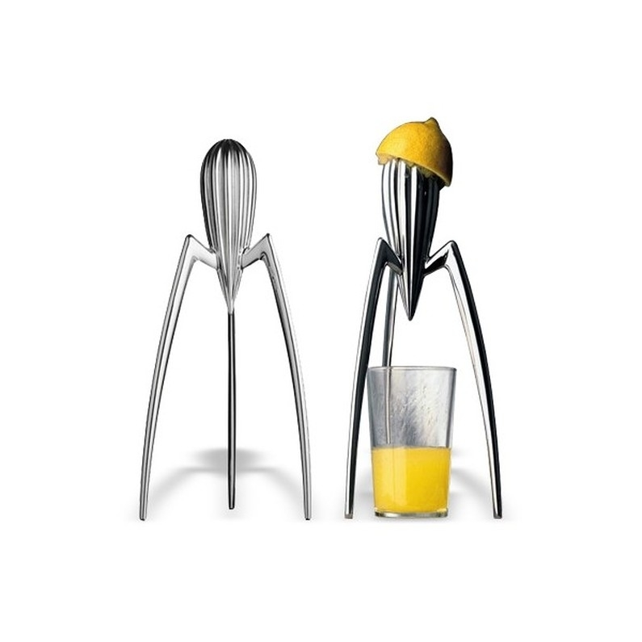
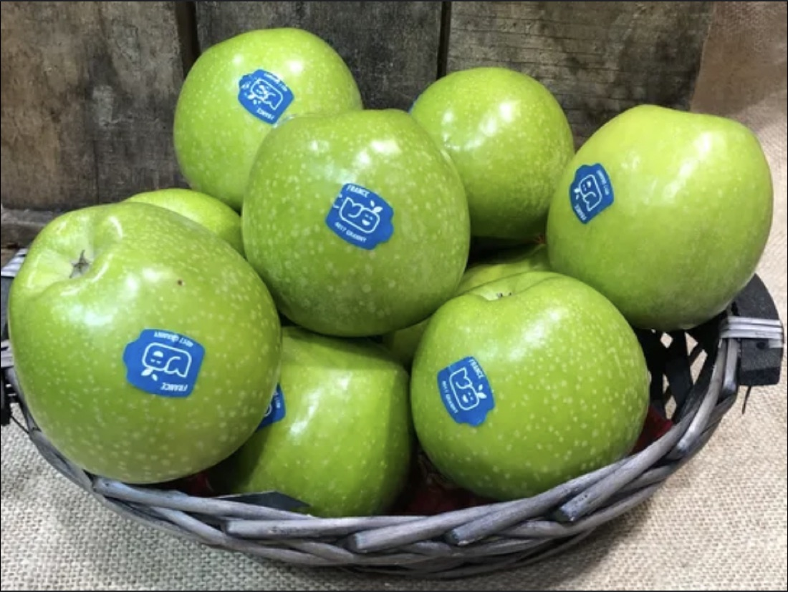
Où ? Avec qui ? Pourquoi celle-là ? → Comprendre le contexte d'usage, c'est déjà faire du design.
Études quanti & quali — l'UX research pour comprendre le vrai besoin.
→Ateliers de créativité, « How Might We » — générer des solutions.
→Confronter les hypothèses de solution aux apprentissages de la recherche.
→Valider les hypothèses auprès des utilisateurs avant d'investir.
→Suivre la vie du dispositif (site, app, process) pour l'améliorer en continu.
→Prendre des décisions objectives, fondées sur le réel.
Réfléchir avant d'investir : se concentrer sur le bon problème.
Concevoir des solutions utiles, au croisement des enjeux business et utilisateurs.
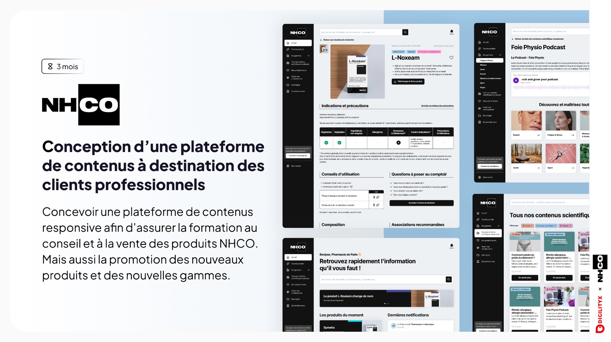
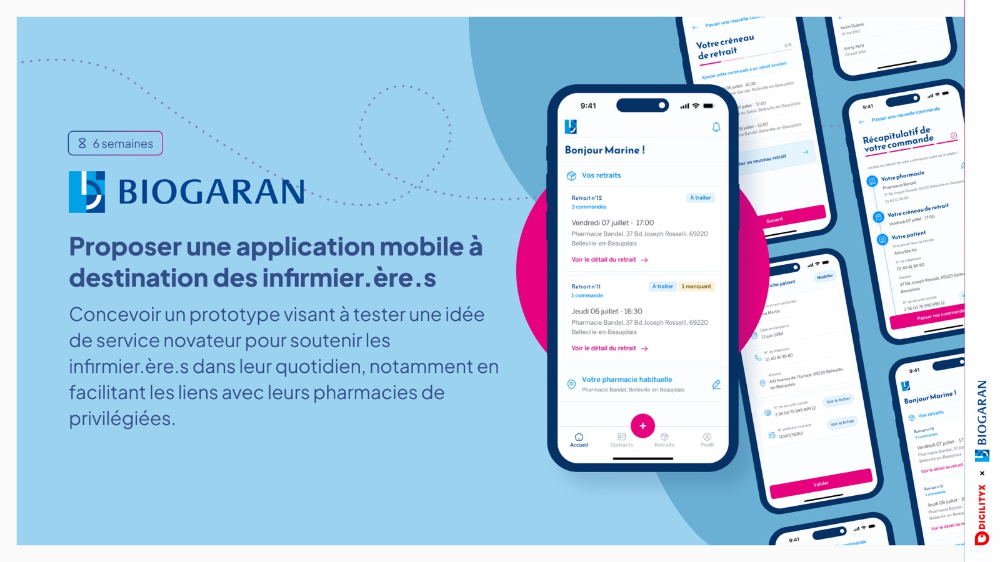
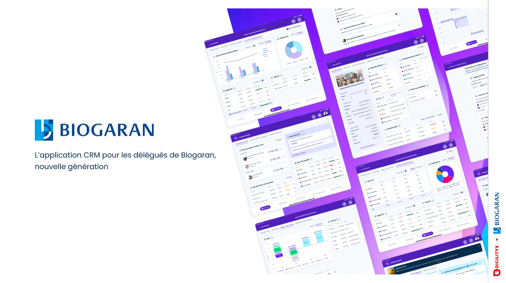
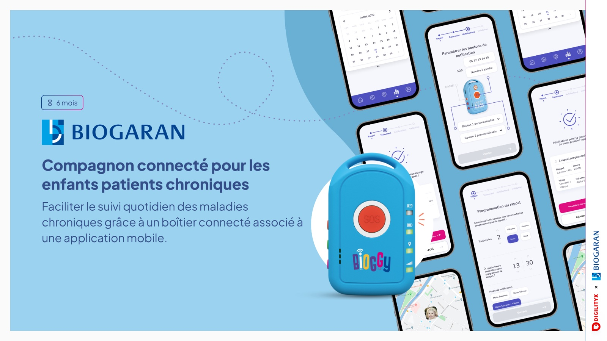
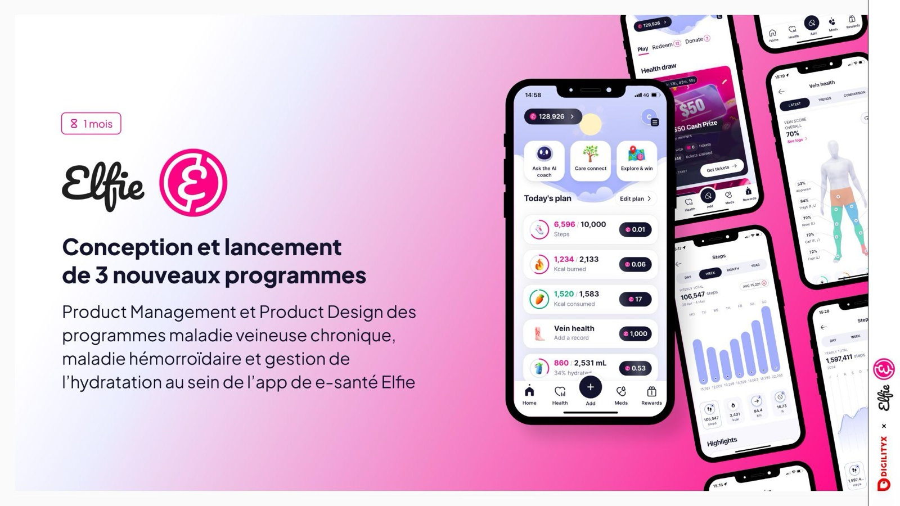
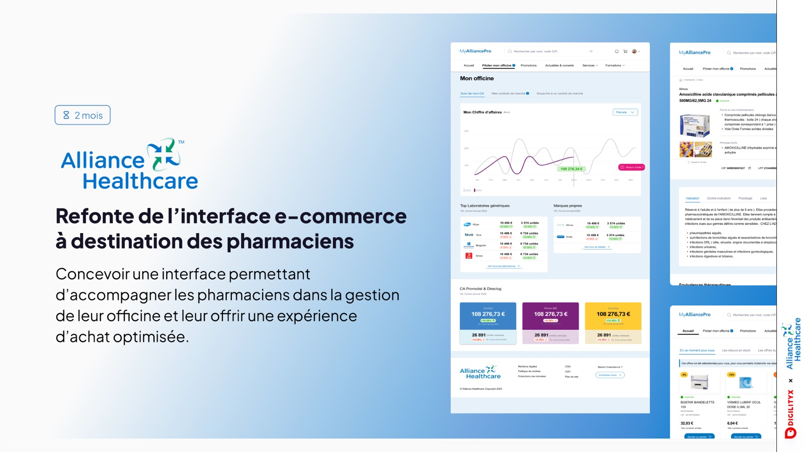
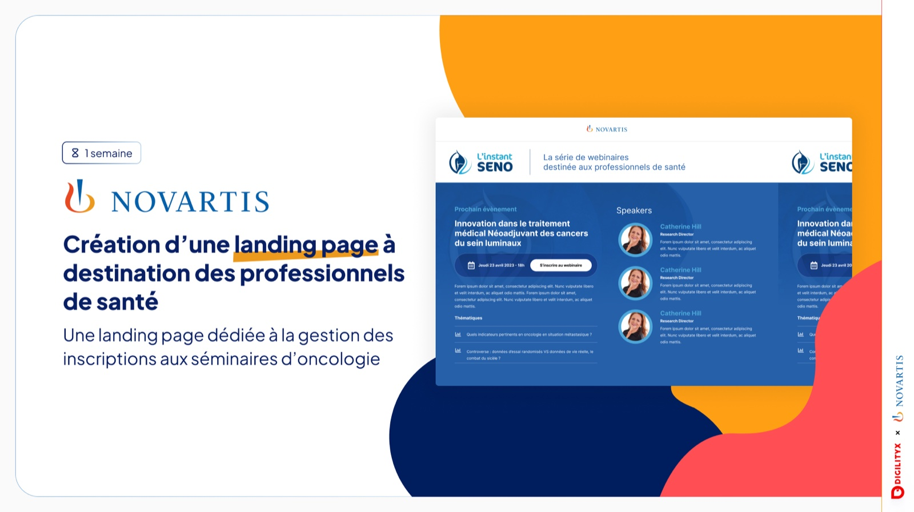
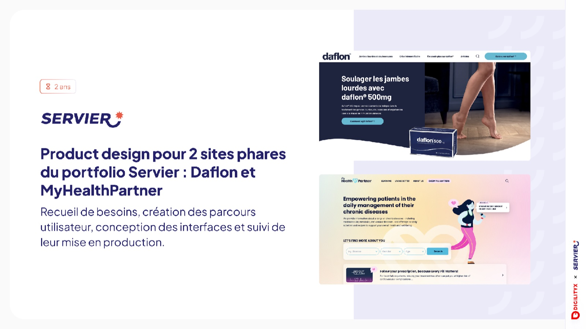
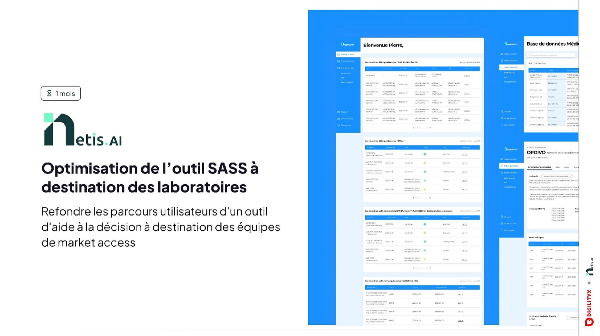
4 heures pour passer du besoin au prototype testé — en équipe.
Par groupe de 5 étudiant·es. Du besoin réel jusqu'à un prototype que d'autres pourront tester.
Constituez vos équipes — on attaque l'étape 1.
À qui s'adresse-t-on, et quel problème résout-on vraiment ?
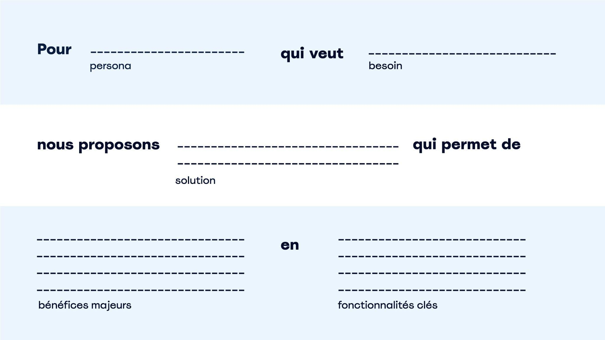
Celle pour laquelle l'utilisateur vient sur votre produit. Supprimez-la, et votre produit n'a plus de valeur.
Exemple — l'app Lydia (envoyer de l'argent à un ami)
1 ordre de remplissage — on commence par la finCommencez par l'objectif final, définissez la 1re étape du chemin, puis posez les étapes intermédiaires nécessaires.
Du croquis papier au prototype interactif — montrer la valeur, pas fabriquer le produit.
Personne n'est Michel-Ange ici — donc pas d'excuse « je ne sais pas dessiner » !
Quelques écrans suffisent pour raconter tout le parcours : ici 3 écrans et des flèches qui montrent les interactions clés. Simple, lisible, fait main.
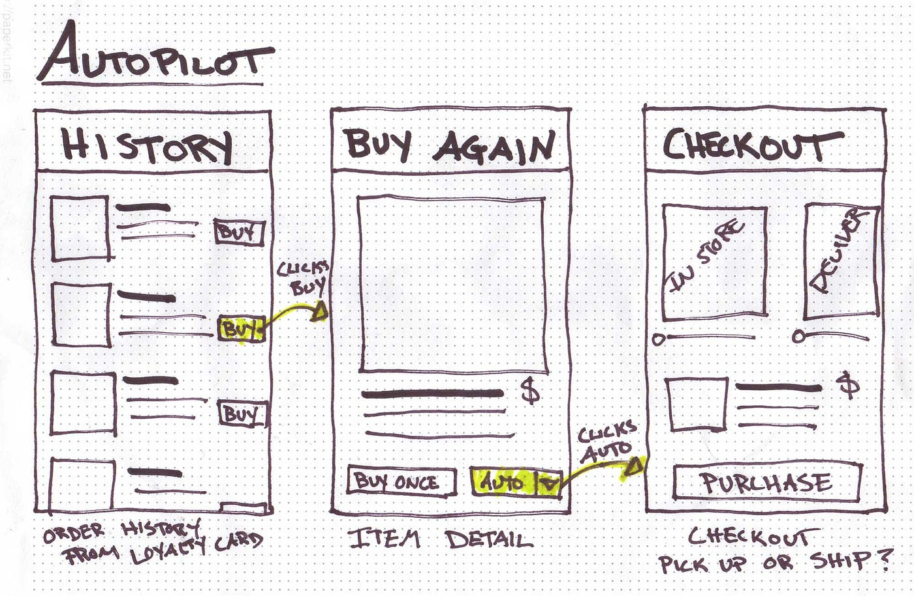
L'IA est votre meilleur allié pour passer du croquis à un prototype réel. Encore faut-il savoir quoi lui demander.
On vous montre comment décrire votre écran, votre parcours et votre intention pour que l'IA génère une interface utile.
L'app de bureau embarque Claude Code dans une interface graphique — aucun terminal requis.
C Claude Code Desktop 🔗 code.claude.com/docs/fr/desktop-quickstartAbonnement Claude Pro / Max requis
L'outil de Google Labs qui génère des interfaces d'app à partir d'une simple description — ou d'un croquis.
S Stitch · Google Labs 🔗 stitch.withgoogle.comGratuit · connexion avec un compte Google
On reprend l'après-midi avec le prototypage.
Maintenant que vous êtes d'accord sur les croquis qui représentent votre fonctionnalité clé :
Tester → apprendre → ajuster.
C'est ça, le design.
1'30 par groupe pour convaincre. Les autres deviennent le jury.
Imaginez que nous sommes des investisseurs, ou votre Direction à convaincre. Vous venez nous expliquer que votre idée est la bonne : elle répond à un vrai besoin, vous avez affiné la proposition de valeur, et vous l'avez incarnée dans une interface réelle, utile et utilisable.
Du besoin au prototype testé — vous avez la méthode. Maintenant, place au design.
Chaque critère s'évalue indépendamment, de 0 à 5 points.